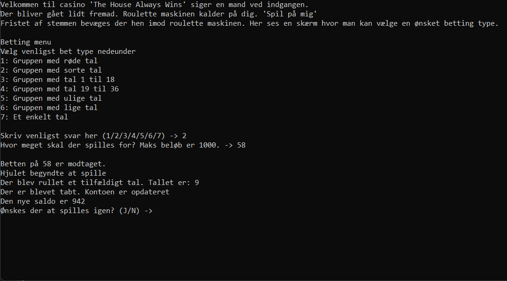
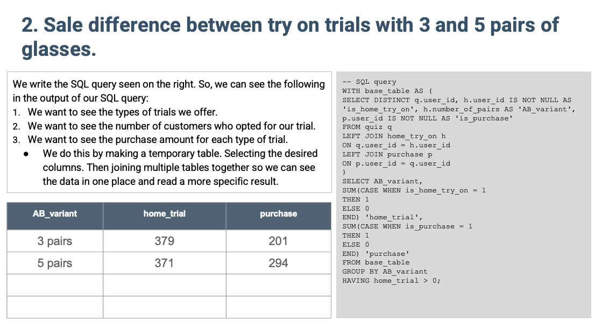

Bigger projects
- Brians Gym website
(a parody club site) - Roulette game
(C#) - SQL usage funnels
(SQL and presentation)

Press/click images below to go to corresponding sites
Brians gym website

Description: This project was an attempt to make a club site. It's also a parody so some sarcasm has been used.
Technologies used: HTML, CSS, VS code text editor, github and github pages.
Roulette project
Description: This project was an attempt to make a text based roulette game, where functions and built in methods were used.
Technologies used: C# and visual studio
SQL usage funnels
Description: This was an attempt to work thorugh a dataset and find out how effective different marketing strategies were in leading to sales and where users lost interest.
Technologies used: SQL, VS code, text document, PowerPoint and Excel